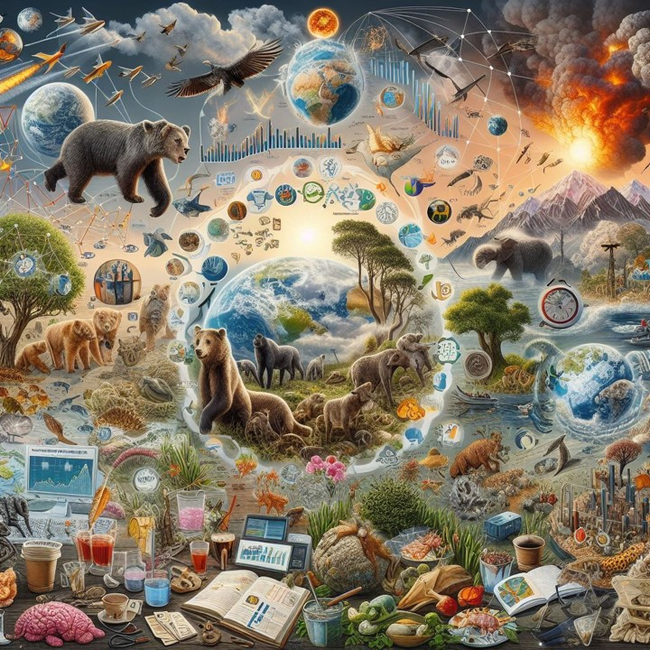
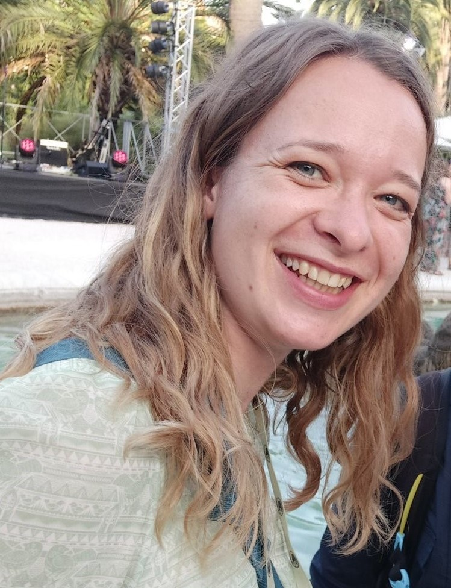
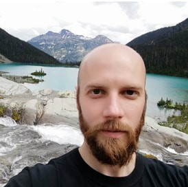
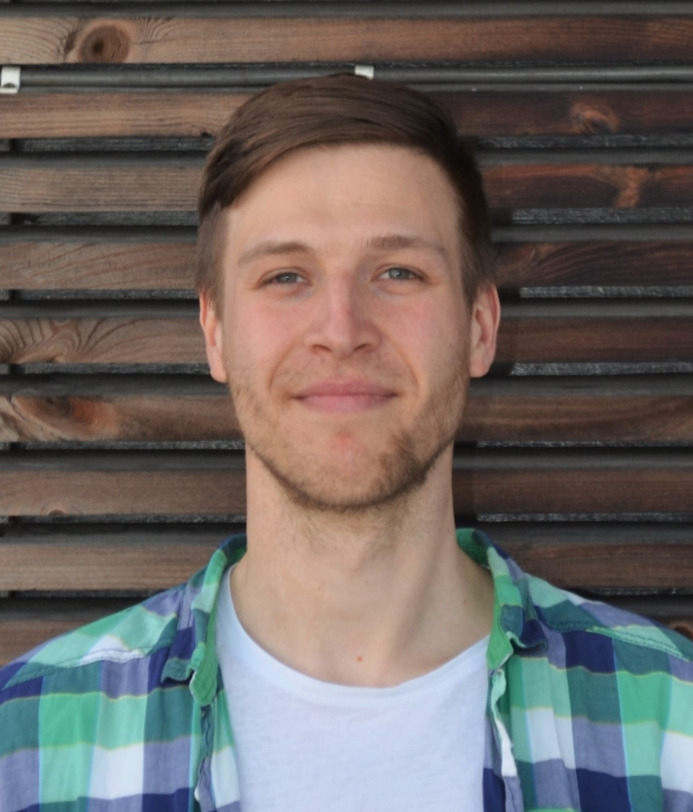
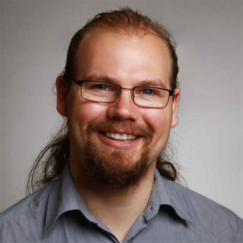
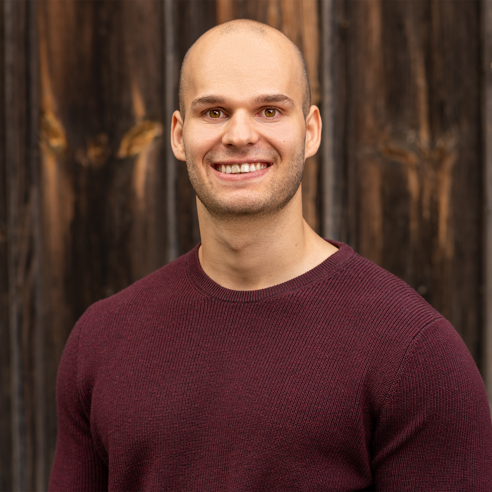

Science School on Quantitative Ecology
📅Date: 23.09.2024 - 28.09.2024 (Monday to Saturday)
🗺️Location: Seminar House of the University of Bayreuth in Wallenfels, Germany
👥Who can apply: Master and PhD students of ecology or a field closely related to ecology
📝Registration Deadline: to-be-annouced; watch this space!
Welcome!👋

🌍In today’s world, the ability to navigate and analyze large, open-access datasets is not just an advantage—it’s essential. Whether you’re aiming to excel in your academic journey or carve out a successful career in ecology, mastery of quantitative methods is key.
🎓Excitingly, in 2024, Charles University in Prague (CZ) and the University of Bayreuth (GER) are teaming up to launch the Science School in Quantitative Ecology. This program is tailored for both Master’s and PhD students eager to advance their skills in data analysis and ecological research.
🌱You’ve found the official hub for all things related to the school. Here, you’ll get early access to preliminary information, registration details, and later on, the complete event schedule and educational materials. Stay tuned and get ready to transform your understanding of ecology with us!
At the end of the course, you’ll be able to:
- 🗃️ Discover and utilize various open-access databases full of ecological and environmental data.
- 💻 Master the art of handling and preprocessing large datasets efficiently using the R programming language.
- 🌐 Clearly explain and apply cutting-edge analysis and modeling methods across different ecological subdisciplines like Biogeography, Evolutionary Ecology, and Paleoecology
- 🕵️♂️ Critically evaluate the appropriateness of the methods you’ve employed.
- 🔬 Formulate your own scientific hypotheses and rigorously test them using suitable methods, ensuring your work is reproducible.
- 🤝 Make lasting connections and call students from other universities your new friends! 😊
Course Contents 📚
Get ready to dive deep into the fascinating world of ecology! Our diverse team of instructors, who are active researchers in various ecological subdisciplines, will guide you through both theoretical and practical aspects of the course. Here’s what you can expect:
- Engaging Lectures: Drawn directly from the instructors’ current research projects, ensuring you learn the most up-to-date information.
- Hands-On Practice: Sharpen your skills with practical exercises in R, tailored to help you tackle real-world data challenges.
- Social Events: From barbecues to informal gatherings, you’ll have plenty of opportunities to relax, network, and forge new friendships with fellow participants.
To make sure you get the most out of this program, you’ll need:
- 🎓 To be a Master’s or PhD student in Ecology or a closely related field.
- 🖥️ Basic proficiency in R programming language. Don’t worry, you don’t need to be an expert!
- 🗣️ Good command of English to comfortably follow the lectures and engage actively in group discussions and activities.
Registration 📝
Important Update:
We are currently awaiting the final decision on course funding. Registration will open as soon as we have the necessary details. Please keep checking this page for the latest updates!
Deadline for Registration: Summer 2024 (exact date to be announced soon).
Ready to join us? Here’s how to get started:
- Students from Charles University in Prague (CZ): Please reach out to Ondřej Mottl at ondrej.mottl(at)gmail.com for more information and to express your interest.
- Students from the University of Bayreuth (GER): Please contact Franka Gaiser at franka.gaiser(at)uni-bayreuth.de or Manuel Steinbauer at manuel.steinbauer(at)uni-bayreuth.de.
Meet the Team 👥
Organising Team 🧑🚀
Franka Gaiser 
- PhD Student in Quantitative Ecology
- 🏦University of Bayreuth, Bayreuth, Germany
- 📬email: franka.gaiser(at)uni-bayreuth.de

- 🔗personal webiste
Antonin Machač 
- Leader of Research Group in Evolution and Biogeography
- 🏦IMIC Czech Academy of Sciences, Prague, Czech Republic
- 📬email: A.Machac(at)email.cz

- 🔗personal webiste
Ondřej Mottl 
- Assistant Professor for Plant Ecology
- 🏦Department of Botany, Faculty of Science, Charles University, Prague, Czech Republic
- 📬email: ondrej.mottl(at)gmail.com

- 🔗personal webiste
Manuel Steinbauer 
- Professor for Sport Ecology
- 🏦Bayreuth Center of Ecology and Environmental Research, University of Bayreuth, Bayreuth, Germany
- 📬email: manuel.steinbauer(at)uni-bayreuth.de

- 🔗personal webiste
Guest instructors 🧙
Gregor Mathes 
- Postdoctoral Fellow in Analytical Paleontology
- 🏦University of Zurich, Zurich, Switzerland

Anna Walentowitz
- Postdoctoral Fellow in Biogeography
- 🏦University of Bayreuth, Bayreuth, Switzerland